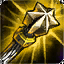

Needlessly Large Rod
Needlessly Large Rod Rabadon's Deathcap
Rabadon's Deathcap| Item | Pick Rate | Avg. Build Time | Sell Rate | Avg. Build Position |
|---|---|---|---|---|
| Blasting Wand | — | — | — | — |
| Needlessly Large Rod |
— | — | — | — |
| Rabadon's Deathcap |
— | — | — | — |
| Zhonya's Hourglass | — | — | — | — |
| Luden's Echo | — | — | — | — |
| Rylai's Crystal Scepter | — | — | — | — |
| Archangel's Staff | — | — | — | — |
| Seraph's Embrace | — | — | — | — |
| Rod of Ages | — | — | — | — |
| Haunting Guise | — | — | — | — |
| Liandry's Torment | — | — | — | — |
| Void Staff | — | — | — | — |
| Nashor's Tooth | — | — | — | — |
| Will of the Ancients | — | — | — | — |
| Morellonomicon | — | — | — | — |
| Athene's Unholy Grail | — | — | — | — |